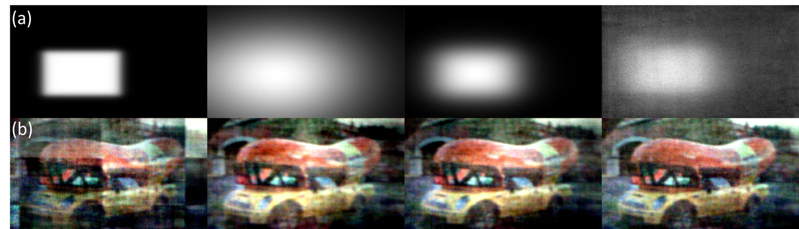

Abstract
Lensless imaging enables compact and versatile computational cameras by replacing bulky optics with thin coded elements. Reconstruction is challenging because large-footprint PSFs produce highly multiplexed observations, making inversion severely ill-conditioned and sensitive to calibration errors and model mismatch. IFIN interleaves differentiable forward projections with learnable inverse updates at every stage, allowing measurement- and image-domain cues to refine each other throughout the hierarchy.
Across DiffuserCam, WiderCam, and MultiWienerNet benchmarks, IFIN achieves state-of-the-art reconstruction quality. The same forward-inverse interleaving principle also transfers to Gaussian deblurring and simulated inline holography.
Physics-guided architecture
Forward-Inverse Interleaving at Every Scale


Reconstruction quality
Lensless Benchmarks
| Dataset | Metric | Previous Best | IFIN |
|---|---|---|---|
| DiffuserCam | PSNR | 28.228 | 29.862 |
| DiffuserCam | LPIPS | 0.183 | 0.174 |
| DiffuserCam | SSIM | 0.878 | 0.893 |
| WiderCam | PSNR | 24.791 | 25.444 |
| WiderCam | LPIPS | 0.202 | 0.201 |
| WiderCam | SSIM | 0.810 | 0.824 |
| MultiWienerNet | PSNR | 28.504 | 31.083 |
| MultiWienerNet | LPIPS | 0.202 | 0.175 |
| MultiWienerNet | SSIM | 0.831 | 0.866 |


Dataset and system
WiderCam
WiderCam is a wide-field lensless reconstruction benchmark captured with a compact custom phase-mask camera. It contains 25,000 paired measurements, split into 24,000 training and 1,000 test images, and highlights strong shift-variant degradation across the field of view.


More results
Supplementary Visualizations




Code
git clone https://github.com/IIL-SNU/IFIN.git
cd IFIN
python -m venv .venv
source .venv/bin/activate
pip install -r requirements.txt
python train.py --config configs/default.yaml
The default configuration follows a DiffuserCam/Waller-style paired dataset layout. Use data.dataset: synthetic for a no-data smoke test.
Citation
@inproceedings{bae2026ifin,
title = {Integrated Forward-Inverse Network for Lensless Image Reconstruction},
author = {Bae, Donggeon and Jung, Jaewoo and Kang, Yong Guk and Lee, Kyung Chul and Kim, Taeyoung and Kim, Jongho and Byun, Sangjun and Park, Joonsik and Lee, Seung Ah},
booktitle = {European Conference on Computer Vision (ECCV)},
year = {2026}
}